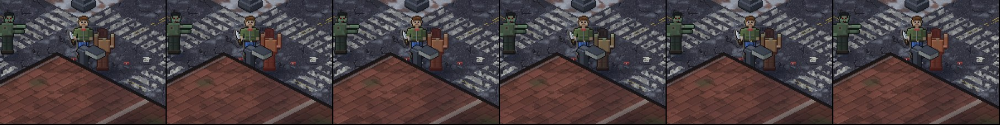

Último Refugio v17.5 «Se ven venir»
Hola equipo: la v17.5 cambia cómo se pelea cuerpo a cuerpo. Necesito su opinión en teléfonos reales.
Lo nuevo
- Los zombis ya no hieren al instante: antes de golpear se echan hacia atrás con un destello rojo y un gruñido corto (corredores menos, brutos más).
- Al verlo venir: retroceder (si ya no están a su alcance, falla), RODAR o pegarles primero (los aturde y cancela su ataque).
- Arreglado: junto a un cadáver al lado de un auto, USAR ya no los sube siempre al auto: gana lo que tienen enfrente.

Qué necesito que prueben
- ¿Se ve bien el destello de día, de noche y con lluvia? ¿Demasiado o muy poco?
- Contra 3 o 4 zombis a la vez: ¿da tiempo a reaccionar? ¿Más justo, o quedó demasiado fácil/difícil?
- Maten un zombi junto a un auto: regístrenlo (mirándolo) y luego súbanse (mirando al auto).
- En una sala con otro teléfono: ¿ven el destello de los zombis que les atacan?
Cualquier cosa rara, con captura y modelo de teléfono. ¡Gracias!